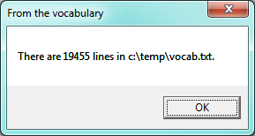
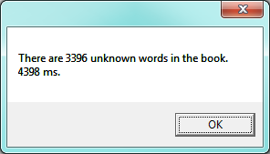
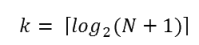
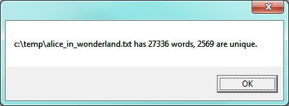
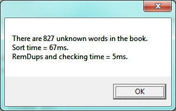

19. List and Array Algorithms¶
This chapter is a bit different from what we’ve done so far: rather than introduce more new C# syntax and features, we’re going to focus on the program development process, and some algorithms that work with lists and arrays.
As we’ve already seen, arrays and lists share many common features. The key difference is that arrays are fixed-size: once you create an array, its number of elements remains fixed. Lists, by contrast, can grow and shrink as our program runs. So in some examples here we use arrays, but we’ll expect that we could use the same algorithm for lists. And vice-versa. And we sometimes use the word list to mean either an array or a list.
As in all parts of this book, our expectation is that you, the reader, will copy our code into your C# environment, play and experiment, and work along with us.
Part of this chapter works with the
book Alice in Wonderland and a
vocabulary file. Your browser should be able to download
and save these files from these links.
19.1. Test-driven development¶
Early in our Value-returning methods chapter we introduced the idea of incremental development, where we added small fragments of code to slowly build up the whole, so that we could easily find problems early. Later in that same chapter we introduced unit testing and gave code for our testing framework so that we could capture, in code, appropriate tests for the methods we were writing.
Test-driven development (TDD) is a software development practice which goes one step further. The key idea is that automated tests should be written first. This technique is called test-driven because — if we are to believe the extremists — non-testing code should only be written after writing the tests, and in response to the fact that some test is failing.
We can still work in small incremental steps, but now we’ll define and express those steps in terms of increasingly sophisticated unit tests that demand more from our code at each stage.
We’ll turn our attention to some standard algorithms that process lists now, but as we proceed through this chapter we’ll attempt to do so in the spirit envisaged by TDD.
19.2. The linear search algorithm¶
We’d like to know the index where a specific item occurs within in an array or list of items. We’ll return the index of the item if it is found, or we’ll return -1 if the item doesn’t occur in the list / array. Let us start with some tests in an array of strings:
Motivated by the fact that our tests don’t even run, let alone pass, we now write the method:
There are a some points to learn here: We’ve seen a similar algorithm before in the chapter
on strings: there we searched for the index of a character in a string.
There we also used a while loop, here we’ve used a for loop.
There are other variations — perhaps we could use a List<string> instead of an
array of strings, but the essential similarity in all these variations is
that we test every item in turn. But we also ensure that as soon as we
find the item we immediately return, without needed to examine the rest
of the items.
Searching all items of a sequence from first to last is called a linear search. Each time we check an item, we’ll call it a probe. We like to count probes as a measure of how efficient our algorithm is, and this will be a good indication of how long our algorithm will take to execute.
Let N be the length of the list to be searched. Linear searching is characterized by the fact that the number of probes needed to find some target depends directly on N. So if the list becomes ten times bigger, we can expect to wait ten times longer when searching for things. Notice too, that if we’re searching for a target that is not present in the list, we’ll have to go all the way to the end before we can return the negative value. So this case needs N probes. However, if we’re searching for a target that does exist in the list, we could be lucky and find it immediately in position 0, or we might have to look further, perhaps halfway, perhaps even all the way to the last item. On average, when the target is present, we’re going to need to go about halfway through the list, or N/2 probes.
We say that this search has linear performance (linear meaning straight line) because, if we were to measure the average search times for different sizes of lists (N) all containing random values, and then plot a graph of probes against N, we’d get an approximately straight line graph — as N gets bigger, so probes will increase proportionally.
Analysis like this is pretty meaningless for small collections — the computer is quick enough not to bother if the list only has a handful of items. So generally, we’re interested in whether our algorithms are scalable — do they perform adequately if we throw bigger problems at them? Would this search be a sensible one to use if we had a million or ten million items (perhaps the catalogue of books in your local library)? What happens for really large datasets, e.g. how does Google search so brilliantly well?
19.3. A more realistic problem¶
As children learn to read, there are expectations that their vocabulary will grow. So a child of age 14 is expected to know more words than a child of age 8. When choosing reading books, an important question might be “which words in this book are not in the expected vocabulary?” Let’s write a program to find out!
Let us assume we can already load a vocabulary of words into our program, and we can input the text of a book, and split it into an array of words. Let us write some tests for what we need to do next. Test data can usually be very small, even if we intend to finally use our methods for much larger cases:
Notice we used Split to create our array of words —
it is easier than typing in the array, and very convenient if you want to input a
sentence into the program and turn it into an array of words.
We now need to implement the method for which we’ve written tests, and we’ll make use of our linear search. The basic strategy is to run through each word in the book, look it up in the vocabulary, and if it is not in the vocabulary, save it into a new resulting array which we return from the method:
Now our tests all pass. In this example it makes sense to use a list rather than an array to collect the unknown words, because we can’t tell how many there are going to be until we’ve found them. So we need the dynamic expandability that the list offers. Perhaps the method should have returned a list rather than an array.
Now let us look at scalability. We have more realistic vocabulary in the download provided at the beginning of this chapter, so let us read in that file as an array of lines. Here is a fragment of code:
C# responds with:

So we’ve got a more sensible size vocabulary. If we open the file in a text editor we can confirm that the number of words matches what our program reports.
Now we tackle the problem of getting the book loaded and split into words. We’re going to need a little black magic. Books have punctuation, and have mixtures of lower-case and upper-case letters. We need to clean up the contents of the book. This will involve converting everything to the same case (we’ll choose lower-case, because our vocabulary happens to be lower-case), removing all the characters we don’t want, and breaking what remains into words. But, in the spirit of Test Driven Development, we begin by writing some tests:
We recall that the Split method has a convenient
overloading that can do what we need:
if we supply an array of char, it will use any one of the chars in the array
as a delimiter. So our strategy will be to make a char array of all the punctuation, white space
and characters that we don’t want, and to split the string wherever we find one of those delimiters.
Line 3 turns the whole string into lower-case. In line 4 we list the characters we
want to get rid of, and line 5 turns this into a array of char, ready for use on line 6. Line
6 splits the text into a new word whenever it finds any one of the delimiters, and the delimiter
is discarded in this process.
The special option StringSplitOptions.RemoveEmptyEntries ensures that
we don’t return any empty words in the result array. Our tests pass now.
(This is not a perfect word-splitter — for example, it will split “Alice’s”
into two words — “alice” and “s”. But it is adequate for our textbook
purpose of teaching some algorithms!)
It would be possible to combine all 5 lines in the body of the method into just a single line of code. But the step-by-step approach used here somehow feels more readable and more easily understandable (this should always be the top priority). It is certainly easier to step through with the debugger if we do more smaller steps rather than one giant one.
So now we’re ready to read in our book with this fragment of code:
The MessageBox informs us that there are 27336 words in our book.
If we set a breakpoint on line 9, and inspect bookwords, we find words like
“alice”, “s”, “adventures”, “in”, “wonderland”, “lewis”, “carroll” ...
Now we have all our pieces ready. Let us see what words in this book are not in the vocabulary:
string[] missingWords = findUnknownWords(vocab, bookWords);
We wait some time while C# works its way through this, and finds the 3396 words in the book that are not in the vocabulary. Mmm... This is not particularly scalable. For a vocabulary that is twenty times larger (you’ll often find school dictionaries with 300 000 words, for example), and for longer books, this is going to be quite slow. So let us make some timing measurements while we think about how we can improve this in the next section.
We get the results and some timing that we can use for comparisons later:

Did it really give us a “correct” answer?
If you inspect the content of the missingWords array, it hasn’t really answered our
original question well. In fact, 398 of those missing words are repetitions of the
word “alice”, because “alice” isn’t in our vocabulary. If an unknown word occurs multiple
times, should we just count it once? Perhaps we should have asked
our original question better.
19.4. Binary Search¶
If you think about what we’ve just done, it is not how we’d work in real life. If you were given a vocabulary and asked to tell if some word was present, you’d probably start in the middle. You can do this because the vocabulary is ordered — so you can probe some word in the middle, and immediately realize that your target was before (or perhaps after) the one you had probed. Applying this principle repeatedly leads us to a very much better algorithm for searching in a collection of items that are already ordered. (Note that if the items are not ordered, you have little choice other than to look through all of them. But, if we know the items are in order, we can improve our searching technique).
Lets start with some tests. Remember, the items need to be sorted if we’re going to use this method:
string[] friends = { "Angelina", "Brad", "Joe", "Paris", "Thandi", "Zoe", "Zuki" }; Tester.TestEq(searchBinary(friends, "Bill"), -1); Tester.TestEq(searchBinary(friends, "Abbey"), -1); Tester.TestEq(searchBinary(friends, "Zummy"), -1); for (int i = 0; i < friends.Length; i++) { Tester.TestEq(searchBinary(friends, friends[i]), i); }
Even our test cases are interesting this time: notice that we start with items not in the array and look at boundary conditions — in the middle of the array, less than all items in the array, bigger than the biggest. Then our loop uses every element as a target, and confirms that our binary search returns the corresponding index of that item.
It is useful to think about having a region-of-interest (ROI) within the array or list that is being searched. This ROI will be the portion of the list in which it is still possible that our target might be found. Our algorithm will start with the ROI initially set to all the items in the array. We’ll always probe in the middle of the current ROI. On every probe there are three possible outcomes: either we find the target, or we learn that we can discard the top half of the ROI, or we learn that we can discard the bottom half of the ROI. We keep probing repeatedly, narrowing down the ROI, until we find our target or until we end up with no more items in our ROI. We can code this as follows:
The region of interest is represented by two variables, a lower bound lb
and an upper bound ub. It is important to be precise about what values
these indexes have. We’ll make lb hold the index of the first item in the ROI, (it is
an inclusive, or closed bound), and we’ll
make ub hold the index just beyond the
last item of interest (it is an exclusive, or open bound).
With this code in place, our tests pass. Great. Now if we substitute a call to this
search algorithm instead of calling the searchLinear in findUnknownWords, can we
improve our performance? When we do that, we get our results much faster: using the binary
search reported a speed of 64ms whereas the linear search reported a speed of 4398ms
— almost 70 times faster. (Your own measurements may be a bit different, of course.)
Why is this binary search so much faster than the linear search? If we uncomment the statement on lines 17 and 18, we’ll be able to see the probes done during a search. Let’s go ahead, and try that:
Target="magical" ROI=[0 - 19455) (size=19455), probed xs[9727]="knowing"
Target="magical" ROI=[9728 - 19455) (size=9727), probed xs[14591]="resurgence"
Target="magical" ROI=[9728 - 14591) (size=4863), probed xs[12159]="overslept"
Target="magical" ROI=[9728 - 12159) (size=2431), probed xs[10943]="misreading"
Target="magical" ROI=[9728 - 10943) (size=1215), probed xs[10335]="magnet"
Target="magical" ROI=[9728 - 10335) (size=607), probed xs[10031]="lightning"
Target="magical" ROI=[10032 - 10335) (size=303), probed xs[10183]="longitudinal"
Target="magical" ROI=[10184 - 10335) (size=151), probed xs[10259]="lumber"
Target="magical" ROI=[10260 - 10335) (size=75), probed xs[10297]="lyrical"
Target="magical" ROI=[10298 - 10335) (size=37), probed xs[10316]="made"
Target="magical" ROI=[10317 - 10335) (size=18), probed xs[10326]="magic"
Target="magical" ROI=[10327 - 10335) (size=8), probed xs[10331]="magnanimity"
Target="magical" ROI=[10327 - 10331) (size=4), probed xs[10329]="magician"
Target="magical" ROI=[10327 - 10329) (size=2), probed xs[10328]="magically"
Target="magical" ROI=[10327 - 10328) (size=1), probed xs[10327]="magical"
Binary search returned 10327
Here we see that finding the target word “magical” needed just 15 probes before it was found at index 10327. The important thing is that each probe halves (with some truncation) the remaining region of interest. By contrast, the linear search would have needed 10328 probes to find the same target word.
The word binary means two. Binary search gets its name from the fact that each probe splits the list into two pieces and discards the one half from the region of interest.
The beauty of the algorithm is that we could double the size of the vocabulary, and it would only need one extra probe! And after another doubling, just another one probe. So as the vocabulary gets bigger, this algorithm’s performance becomes even more impressive.
Can we put a formula to this? If our list size is N, what is the biggest number of probes k we could need? The maths is a bit easier if we turn the question around: how big a list N could we deal with, given that we were only allowed to make k probes?
With 1 probe, we can only search a list of size 1. With two probes we could cope with lists up to size 3 — (test the middle item with the first probe, then test either the left or right sub-list with the second probe). With one more probe, we could cope with 7 items (the middle item, and two sub-lists of size 3). With four probes, we can search 15 items, and 5 probes lets us search up to 31 items. So the general relationship is given by the formula
N = 2k - 1
where k is the number of probes we’re allowed to make, and N is the maximum size of the list that can be searched in k probes. This method is exponential in k (because k occurs in the exponent part). If we wanted to turn the formula around and solve for k in terms of N, we need to move the constant 1 to the other side, and take a log (base 2) on each side. (The log is the inverse of an exponent.) So the formula for k in terms of N is now:

The square-only-on-top brackets are called ceiling brackets: this means that you must round the number up to the next whole integer (because we can’t make 7.3 probes — it will need to be 8).
Let us try this on a calculator, or in C#, which is the mother of all calculators: Here is a fragment of code that calculates and outputs the formula for various values of N:
foreach (int N in new int[] {1, 2, 3, 4, 5, 10, 100, 1000, 1000000, 1000000000}) { int maxProbes = Convert.ToInt32(Math.Ceiling(Math.Log(N + 1, 2))); Console.WriteLine("{0} items would need at most {1} probes.", N, maxProbes); }
And here are the magical results:
1 items would need at most 1 probes.
2 items would need at most 2 probes.
3 items would need at most 2 probes.
4 items would need at most 3 probes.
5 items would need at most 3 probes.
10 items would need at most 4 probes.
100 items would need at most 7 probes.
1000 items would need at most 10 probes.
1000000 items would need at most 20 probes.
1000000000 items would need at most 30 probes.
This tells us that searching 1000 items needs 10 or fewer probes. (Well technically, with 10 probes we can search exactly 1023 items, but the easy and useful stuff to remember here is that “1000 items needs 10 probes, a million needs 20 probes, and a billion items only needs 30 probes.”)
You will rarely encounter algorithms that scale to large datasets as beautifully as binary search does!
19.5. Getting the unique elements in an array¶
We sometimes want to get the unique elements in an array or a list. We could use a list and delete the elements we don’t want. Or we could build a new list that contains only those elements we do want, while leaving the original array or list unchanged.
Consider our case of looking for words in Alice in Wonderland that are not in our vocabulary. We had a report that there are 3398 such words, but there are duplicates in that list. How can we remove these duplicates?
A good approach is to first sort the array — this means any duplicates will be positioned next to each other. Then we can build a new list, without duplicates. Let us start with some test cases for removing adjacent duplicates from an array that is already sorted:
The algorithm is easy and efficient. We simply have to remember the most recent item that was inserted into the result, and avoid inserting it again:
The amount of work done in this algorithm is linear — each item in xs causes the loop
to execute exactly once, and there are no nested loops. So doubling the number of elements in
xs should cause this method to run twice as long: the relationship between the size of
the list and the time to run will be graphed as a straight (linear) line.
Let us go back now to our analysis of Alice in Wonderland. Before checking the words in the book against the vocabulary, we’ll sort those words into order, and eliminate duplicates. So our new code and the resulting output looks like this:

If we now look up our unique words the vocabulary, we’ll realize two advantages:
- We do about 10 times less work because the number of unique words is about 10 times smaller than the original. So it runs about 10 times faster.
- The answer is more useful: it gives us an accurate idea of what new words the children will encounter if we prescribe this book as a set work. And, of course, the unknown words will already be in alphabetic order.
It is pretty amazing that Lewis Carroll was able to write a classic piece of literature using only 2569 different words!
19.6. Merging sorted arrays¶
Suppose we have two sorted arrays. Devise an algorithm to merge them together into a single sorted array.
A simple but inefficient algorithm could be to define a new array that is big enough to hold all the elements, copy all the elements to the new array, and then sort it.
But this doesn’t take advantage of the fact that the input arrays are already sorted.
Lets get some tests together first:
Here is our merge algorithm:
The algorithm works as follows: we create a result array that is the correct size. We keep three indexes, one into each input array, and one into the result array. On each iteration of the loop, whichever array item is smaller gets copied to the result, and that array’s index is advanced. (The index of the result array is also advanced.) As soon as either index for the input arrays reaches the end of its array, we exit the loop and copy any remaining items to the result.
Line 15 is a compact way of writing three separate statements.
result[zi++] is common idiom in the C-like family of languages. It means “use the value of zi
to index the array, and then (for next time), increment the value of zi”. So line 15 is equivalent
to the more verbose version
Line 9 uses this shorthand, and also uses a conditional operator (also found in C, C++, Java, etc.).
The expression before the ? is a boolean condition that is evaluated. If it is true, the result of the
expression become the expression after the question mark, otherwise the result of the whole expression becomes
the expression after the colon. So line 9 could be written more verbosely like this:
What if I wanted to use this algorithm to merge arrays of strings? I can create an overloaded method (another method with the same name, but a different signature) that uses string arrays. Three lines would need to change:
Notice that in line 9 we had to use the CompareTo method for the comparison (because
strings cannot be compared with <=). Interestingly, though, integers, doubles, chars, etc.
can also be compared using CompareTo — so we could use line 9 from this version
in the version for integers, and we’d reduce the number of differences to just two lines:
the method signature on line 1, and the definition of the new array on line 3.
19.7. Generic methods — a first look¶
If I wanted to merge arrays of double, I’d need another method overloading with two lines different.
And then another overloading for merging arrays of char, or arrays of student, and so on.
Each new method would have just two lines of code different from the others.
C# has a powerful mechanism that allows us to parametrize a method so that it works for any type T. (We’ve already seen the notation with lists.)
This still needs another tweak before it works, but let’s understand what we’ve got so far:
The <T> in the signature in line 1 is called a type parameter. It says “this works for
any type, call the type T”. A method that works for many types is called a generic method.
Then the T can also be used in the signature and in the body of the method as a substitution.
So reading line 1, it says “The method expects two arrays with elements of type T as inputs,
and it returns an array of T”. Each time we call this method from a different place in our code,
the T could be substituted by a different concrete type (e.g. int, string, Turtle).
So, if we attempt to merge an array of strings with another array of strings to produce
an array of strings, it is going to work just fine.
But trying to merge an array of ints with an array of strings will produce an error:
T cannot be an int and a string at the same time.
Line 3 says “Define a new array of type T, and instantiate it.”
If we copy this code into our program, we get an error on line 9. The compiler complains that “T does not contain a definition for ‘CompareTo’.”
This is because not all element types T can be compared to each other. So, for example,
if we tried to merge two arrays of Turtle or Button, there is no CompareTo method
that lets us compare one turtle to another.
At the heart of the problem is that our “generic” mechanism is too general. We need
a little more magic on line 1, like this:
The where keyword introduces an extra constraint on what concrete types
can be used at any call site. It says “Only types that satisfy the IComparable
interface are acceptable”. We’ll learn more about interfaces shortly. But for now, it
is enough to know that this means that the compiler now has a guarantee that there
will be a CompareTo method for type T, and our error on line 9 disappears.
With this change in place we now have a generic merge method that works for any
arrays of element types, provided they can be compared to each other.
If we did attempt to pass arrays of Turtle or Button, or any other types that
don’t support comparison, we’d get a compilation error at at the call site.
Most of the methods we work with can be generalized in this way: we can have a binary search, for example, that works for arrays of any comparable type. For most of the methods we cover in this chapter we won’t do this generalization — simply because it allows us to focus more on the logic of the algorithms, rather than the C# machinery for making the algorithm more general.
19.8. Alice in Wonderland, again!¶
Underlying the algorithm for merging sorted lists is a deep pattern of computation that is widely reusable. The pattern essence is “Run through the lists always processing the smallest remaining items from each, with these cases to consider:”
- What should we do when either list has no more items?
- What should we do if the smallest items from each list are equal to each other?
- What should we do if the smallest item in the first list is smaller than the smallest one the second list?
- What should we do in the remaining case?
Lets assume we have two sorted lists. Exercise your algorithmic skills by adapting the merging algorithm pattern for each of these cases:
- Return only those items that are present in both lists.
- Return only those items that are present in the first list, but not in the second.
- Return only those items that are present in the second list, but not in the first.
- Return items that are present in either the first or the second list.
- Return items from the first list that are not eliminated by a matching element
in the second list. In this case, an item in the second list “knocks out” just one
matching item in the first list. This operation is sometimes called bagdiff.
For example
bagdiff(new int[] {5,7,11,11,11,12,13}, new int[] {7,8,11});would returnnew int[]{5,11,11,12,13}
In the previous section we sorted the words from the book, and eliminated duplicates.
Our vocabulary is also sorted. So third case above — find all items in the second list
that are not in the first list, would be another way to implement findUnknownWords.
Instead of searching for every word in the dictionary (either by linear or binary search),
why not use a variant of the merge to return the words that occur in the book, but not in
the vocabulary.
Now we put it all together:
Even more stunning performance here:

Let’s review what we’ve done. We started with a word-by-word linear lookup in the vocabulary that ran in about 5 seconds. We implemented a clever binary search, about 70 times faster. But then we did something even better: we sorted the words from the book, eliminated duplicates, and used a merging pattern to find words from the book that were not in the dictionary. Not only did we now have a more useful result: the unique unknown words in alphabetical order, but the algorithm is a lot faster than our first attempt!
That is what we can call a good day at the office!
19.9. Glossary¶
- linear
- Relating to a straight line. Here, we talk about graphing how the time taken by an algorithm depends on the size of the data it is processing. Linear algorithms have straight-line graphs that can describe this relationship.
- merge algorithm
- An efficient algorithm that merges two already sorted lists, to produce a sorted list result. The merge algorithm is really a pattern of computation that can be adapted and reused for various other scenarios, such as finding words that are in one array but not in another.
- probe
- While searching for an item, each time we take a look we call it a probe.
- scalable
- An algorithm or technique which remains viable or practical when applied to large problems.
- search; binary
- A famous algorithm that searches for a target in a sorted list. Each probe in the list allows us to discard half the remaining items, so the algorithm is very efficient.
- search; linear
- A search that probes each item in a list or sequence, from first, until it finds what it is looking for. It is used for searching for a target in unordered lists of items.
- test-driven development
- A software development practice which arrives at a desired feature through a series of small, iterative steps motivated by automated tests which are written first that express increasing refinements of the desired feature. (see the Wikipedia article on Test-driven development for more information.)
19.10. Exercises¶
The section in this chapter called Alice in Wonderland, again! started with the observation that the merge algorithm uses a pattern that can be reused in other situations. Adapt the merge algorithm to write each of these methods, as was suggested there:
- Return only those items that are present in both arrays.
- Return only those items that are present in the first array, but not in the second.
- Return only those items that are present in the second array, but not in the first.
- Return items that are present in either the first or the second array.
- Return items from the first array that are not eliminated by a matching element
in the second array. In this case, an item in the second array “knocks out” just one
matching item in the first array. This operation is sometimes called bagdiff.
For example
bagdiff([5,7,11,11,11,12,13], [7,8,11])would return[5,11,11,12,13]
Every week a computer scientist buys four lotto tickets. On each lotto ticket she must pick 6 numbers between 1 and 49. She always chooses prime numbers, with the hope that if she ever hits the jackpot, she will be able to go onto TV and facebook and tell everyone her secret. This will suddenly create widespread public interest in prime numbers, and will be the trigger event that ushers in a new age of enlightenment and world peace. She represents her weekly tickets as an array of arrays:
int[] [] my_tickets = { new int[] { 7, 17, 37, 19, 23, 43}, new int[] { 7, 2, 13, 41, 31, 43}, new int[] { 2, 5, 7, 11, 13, 17}, new int[] {13, 17, 37, 19, 23, 43} };Complete these exercises.
Each lotto draw picks six random balls, numbered from 1 to 49. Write a method to return a random lotto draw. Note that it should not be possible to pick the same ball more than once. Statisticians call this “picking balls without replacement”.
Write a method that compares a single ticket and a draw, and returns the number of correct picks on that ticket:
Tester.TestEq(lotto_match(new int[]{42,4,7,11,1,13}, new int[]{2,5,7,11,13,17}), 3);Write a method that takes an array of tickets and a draw, and returns an array telling how many picks were correct on each ticket:
Tester.TestEq(lotto_matches(new int[]{42,4,7,11,1,13}, my_tickets), new int[]{1,2,3,1});Write a method that takes an array of integers, and returns the number of primes in the array:
Tester.TestEq(primes_in(new int[]{42, 4, 7, 11, 1, 13}), 3);Write a method to discover whether the computer scientist has missed any prime numbers in her selection of her tickets. Return an array of all primes that she has missed:
Tester.TestEq(prime_misses(my_tickets), new int[]{3, 29, 47});Write a method that repeatedly makes a new draw, and compares the draw to the four tickets.
- Count how many draws are needed until one of the computer scientist’s tickets has at least 3 correct picks. Try the experiment twenty times, and average out the number of draws needed.
- How many draws are needed, on average, before she gets at least 4 picks correct?
- How many draws are needed, on average, before she gets at least 5 correct? (This might take a while.)
Notice that we have difficulty constructing test cases here, because our random numbers are not deterministic. Automated testing only really works if you already know what the answer should be!
Read Alice in Wonderland. You can read the plain text version we have with this textbook, or if you have e-book reader software on your PC, or a Kindle, iPhone, Android, etc. you’ll be able to find a suitable version for your device at http://www.gutenberg.org/. They also have html and pdf versions, with pictures, and thousands of other classic books!